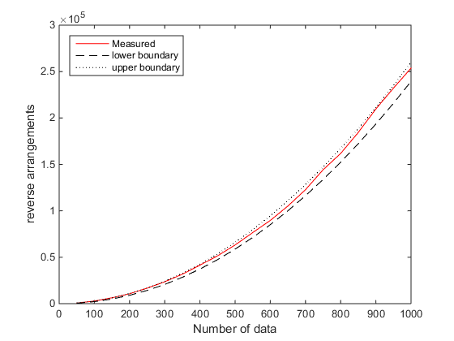
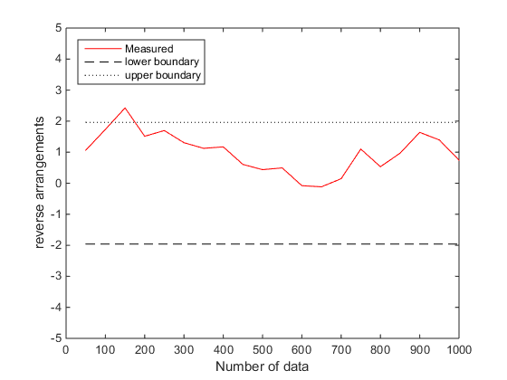
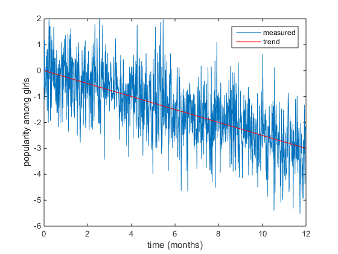
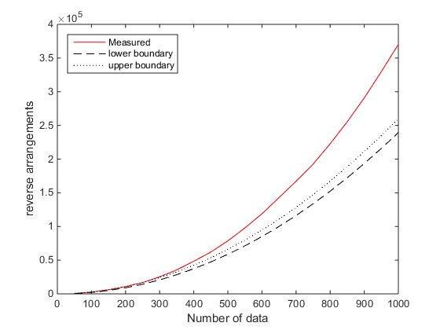
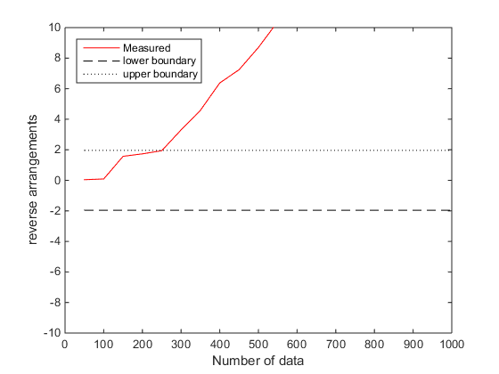
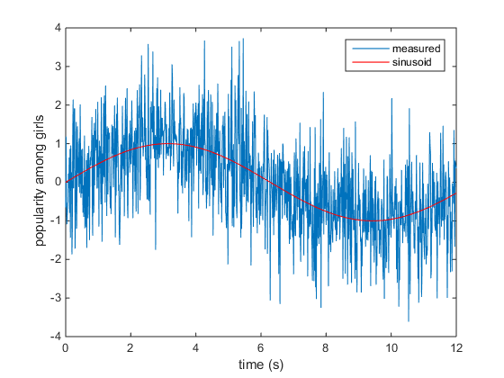
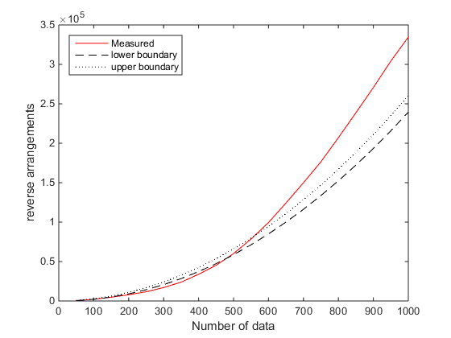
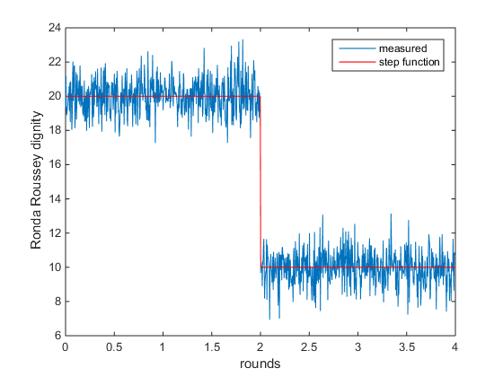
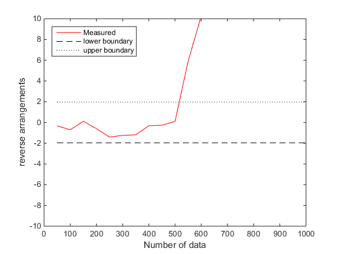

Contents
clear all;close all;clc;
EXAMPLE 1
Example 1: Bendat and piersol, Random data, 2010, page 99 Example 4.4
data = [5.2,6.2,3.7,6.4,3.9,4.0,3.9,5.3,4,4.6,5.9,6.5,4.3,5.7,3.1,5.6,5.2,3.9,6.2,5.0]; [ResultTest,A,Ainf,Asup] = RA_test(data,1)
ResultTest =
1
A =
86
Ainf =
65
Asup =
125
EXAMPLE 2
White noise - stationnary - method 1
N = 1000; % number of data points data = randn(1,N); [ResultTest,A,Ainf,Asup] = RA_test(data,1) % plot the reverse arrangement as a function of the sample size % Inspired from: % ------------------------------------------------------------------------- % Analysis of trends between solar wind velocity and energetic electron % fluxes at geostationary orbit using the reverse arrangement test % H Aryan - ?2013 % ------------------------------------------------------------------------- clear Res A Ainf Asup rng(1) jj=1; Ndata = 50:50:N; for ii=1:numel(Ndata), dummy = data(1:Ndata(ii)); [Res(jj),A(jj),Ainf(jj),Asup(jj)] = RA_test(dummy,1); jj=jj+1; end figure plot(Ndata,A,'r',Ndata,Ainf,'k--',Ndata,Asup,'k:') xlabel('Number of data') ylabel('reverse arrangements'); legend('Measured','lower boundary','upper boundary','location','NorthWest') set(gcf,'color','w') % The red curve falls between the upper and lower boundary: The signal is % stationnary
ResultTest =
1
A =
253666
Ainf =
239412
Asup =
260088
 EXAMPLE 3
White noise - stationnary - method 2
clear Res A Ainf Asup jj=1; Ndata = [50:50:N]; for ii=1:numel(Ndata), dummy = data(1:Ndata(ii)); [Res(jj),A(jj),Ainf(jj),Asup(jj)] = RA_test(dummy,2); jj=jj+1; end figure plot(Ndata,A,'r',Ndata,Ainf,'k--',Ndata,Asup,'k:') xlabel('Number of data') ylabel('reverse arrangements'); legend('Measured','lower boundary','upper boundary','location','NorthWest') set(gcf,'color','w') ylim([-5,5]) % The red curve falls between the upper and lower boundary: The signal is % stationnary
EXAMPLE 3
White noise - non stationnary (trend) - method 1 plot the reverse arrangement as a function of the sample size
rng(1) myTrend =-0.003.*linspace(0,N,N); t = linspace(0,12,N); % time data = randn(1,N)+myTrend; % Let's have a look of the time serie generated. figure hold on;box on plot(t,data); plot(t,myTrend,'r'); % a significativ trend is visible legend('measured','trend') xlabel('time (months)'); ylabel('popularity among girls') set(gcf,'color','w')
clear Res A Ainf Asup jj=1; Ndata = 50:50:N; for ii=1:numel(Ndata), dummy = data(1:Ndata(ii)); [Res(jj),A(jj),Ainf(jj),Asup(jj)] = RA_test(dummy,1); jj=jj+1; end clf;close all figure plot(Ndata,A,'r',Ndata,Ainf,'k--',Ndata,Asup,'k:') xlabel('Number of data') ylabel('reverse arrangements'); legend('Measured','lower boundary','upper boundary','location','NorthWest') set(gcf,'color','w') % The red curve falls outside the upper and lower boundary: The signal is % non-stationnary
EXAMPLE 4
White noise - non stationnary (trend) - method 2 plot the reverse arrangement as a function of the sample size
clear Res A Ainf Asup jj=1; for ii=1:numel(Ndata), dummy = data(1:Ndata(ii)); [Res(jj),A(jj),Ainf(jj),Asup(jj)] = RA_test(dummy,2); jj=jj+1; end figure plot(Ndata,A,'r',Ndata,Ainf,'k--',Ndata,Asup,'k:') xlabel('Number of data') ylabel('reverse arrangements'); legend('Measured','lower boundary','upper boundary','location','NorthWest') ylim([-10,10]) % The red curve falls outside the upper and lower boundary: The signal is % non-stationnary
EXAMPLE 5
White noise - non stationnary (sinusoid) - method 1 plot the reverse arrangement as a function of the sample size
% White noise - non stationnary (trend) - method 1 % plot the reverse arrangement as a function of the sample size rng(1) t = linspace(0,12,N); % time myAverage =sin(0.5.*t); data = randn(1,N)+myAverage; % Let's have a look of the time serie generated. figure hold on;box on plot(t,data); plot(t,myAverage,'r'); % a significativ trend is visible legend('measured','sinusoid') xlabel('time (s)'); ylabel('popularity among girls') set(gcf,'color','w')
Reverse arrangement calculation
clear Res A Ainf Asup jj=1; Ndata = 50:50:N; for ii=1:numel(Ndata), dummy = data(1:Ndata(ii)); [Res(jj),A(jj),Ainf(jj),Asup(jj)] = RA_test(dummy,1); jj=jj+1; end figure plot(Ndata,A,'r',Ndata,Ainf,'k--',Ndata,Asup,'k:') xlabel('Number of data') ylabel('reverse arrangements'); legend('Measured','lower boundary','upper boundary','location','NorthWest') set(gcf,'color','w') % The red curve falls outside the upper and lower boundary: The signal is % non-stationnary
EXAMPLE 6
White noise - non stationnary (step function) - method 2 plot the reverse arrangement as a function of the sample size
% White noise - non stationnary (trend) - method 1 % plot the reverse arrangement as a function of the sample size rng(1) t = linspace(0,4,N); % time myStep =10.*[ones(1,round(2/4*N)),zeros(1,round(2/4*N))]; data = 10+randn(1,N)+myStep; % Let's have a look of the time serie generated. figure hold on;box on plot(t,data); plot(t,10+myStep,'r'); % a significativ trend is visible legend('measured','step function') xlabel('rounds'); ylabel('Ronda Roussey dignity') set(gcf,'color','w')
Reverse arrangement calculation
clear Res A Ainf Asup jj=1; Ndata = 50:50:N; for ii=1:numel(Ndata), dummy = data(1:Ndata(ii)); [Res(jj),A(jj),Ainf(jj),Asup(jj)] = RA_test(dummy,2); jj=jj+1; end figure plot(Ndata,A,'r',Ndata,Ainf,'k--',Ndata,Asup,'k:') xlabel('Number of data') ylabel('reverse arrangements'); legend('Measured','lower boundary','upper boundary','location','NorthWest') set(gcf,'color','w') % The red curve falls outside the upper and lower boundary after the step function: The signal is % non-stationnary ylim([-10,10])